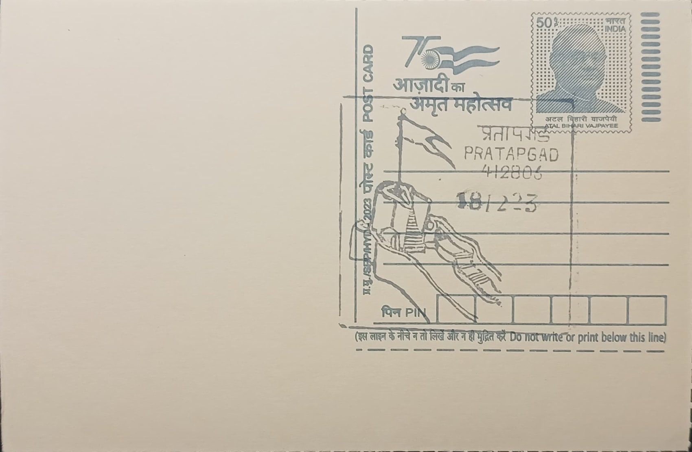

Pratapgad Fort
प्रतापगड किल्ला


The name Pratapgad, meaning "Fort of Valour" in Marathi, was given to the hill fortress raised on a spur of the Sahyadri range to command the Par Pass and oversee the valleys of the Nira and Koyna rivers. Chhatrapati Shivaji commissioned the fort's construction in 1656 and entrusted the work to his prime minister, Moropant Trimbak Pingle, who completed it the same year as part of a chain of strongholds meant to secure the newly subdued Javali region from the Maratha kingdom's rivals, chiefly the Bijapur Sultanate, whose forces controlled much of the surrounding Deccan plateau at the time.
As a hill fort, Pratapgad belongs to a distinct category of Deccan military architecture developed under Shivaji to offset the Marathas' lack of a standing cavalry force comparable to the Mughals or Bijapur, relying instead on terrain, concealment, and fortified heights. Its principal historical importance rests on the events of 10 November 1659, when Shivaji met the Bijapuri general Afzal Khan at the foot of the fort; the encounter ended with Khan's death and the rout of his army, a result that is widely regarded by historians as the moment the Maratha kingdom first demonstrated it could defeat a major Sultanate force in open confrontation, giving the fort a status in Maratha historical memory matched by few other sites.
Built roughly 3,500 feet above sea level with valleys falling away 600 to 800 feet on either flank, the fort is laid out in two connected sections, a lower main fort and an upper citadel or balekilla, each ringed with bastions and walls designed to exploit the steep natural approach. Its principal gate was positioned and angled so that it could not be struck directly by cannon fire from below, while the approach to the doorway was narrowed and fitted with steps specifically to prevent attackers from driving elephants or battering logs against it, a detail reflecting the practical defensive engineering typical of forts built under Shivaji's direction across the Western Ghats.
Within the fort stands a temple dedicated to the goddess Bhavani, traditionally associated with the sword Shivaji is said to have received from the deity before his campaigns, making the site a place of both military and devotional significance. A short distance away lies the Afzal Buruj, a tomb structure popularly known as the Dargah Sharif, built on Shivaji's own orders to mark the place where Afzal Khan was buried after his death, a gesture that has long been cited as an example of the chivalric conventions sometimes observed even amid the period's sharpest conflicts.
The statue of Shivaji at the fort's upper section, unveiled by Prime Minister Jawaharlal Nehru in 1957, remains a focal point for the thousands of visitors who climb to Pratapgad each year, many arriving via the road from Mahabaleshwar roughly 24 kilometres away. The fort is maintained under state protection as a heritage monument open to the public year-round, and it continues to be used as a site for commemorative gatherings each November around the anniversary of the Afzal Khan encounter, drawing descendants of Maratha institutions and local officials alongside ordinary tourists.
| Date of Introduction | December 18, 2023 |
|---|---|
| Address | Branch Postmaster, |
| Pratapgad BO, | |
| Satara (dt.), Maharashtra - 412806. |